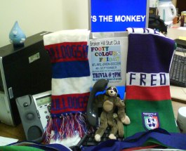
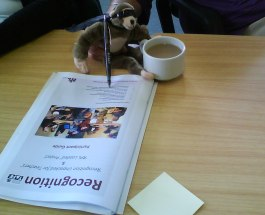

Journal of Monica Key the Flying Monkey

Footy Friday - 5th September 2014
Having recharged my batteries (hmmm... do I have any?), it was time for me to head to TAFE.
What better time than Footy Colours Friday!
I came in to see Alison, but alas, I just missed her.
Feeling bitterly disappointed, I decided it was time for a holiday. Up, up and away...

Thursday 18th September 2014
Can you believe it? I started to get homesick, so I flew back to
Broken Hill.
I heard on the grapevine that Alison was going to a training course today. Perfect opportunity to
catch up at last, so I headed up to the training room. Ah, you wouldn't credit it... when I got there,
Alison had already left.
I've decided to resume my holiday... there are so many exciting places to see in Australia...
my next stop is Gravelly Beach in Tasmania.
Tuesday 14th July 2015
How exciting! Today I arrived in Paris, just in time for the French national day - Bastille Day - or Le quatorze juillet
as the French usually call it. After several months exploring Australia I decided it was time to head overseas.